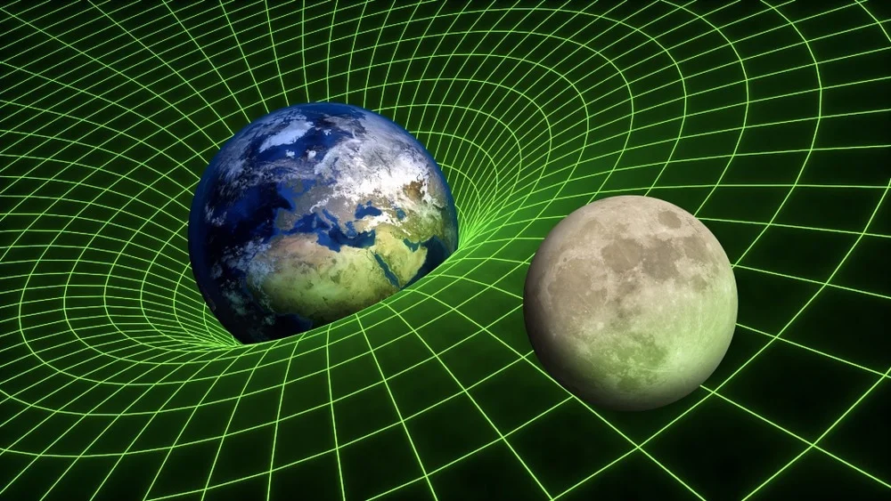
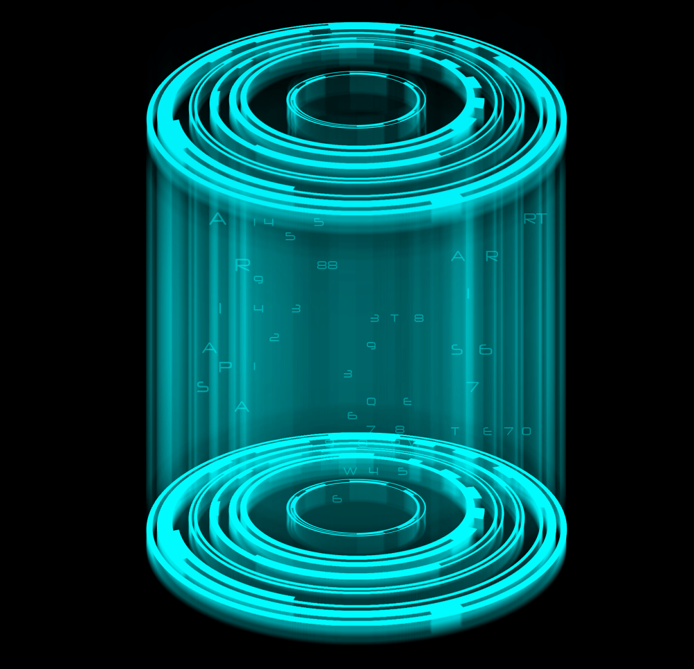
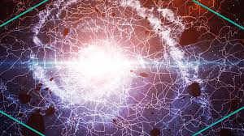

1. Einstein’s Theory of General Relativity
Einstein’s general relativity theory, which describes gravity as a curvature in spacetime, is often the foundation for scientific discussions about time travel. According to this theory, massive objects, like planets and stars, bend spacetime around them, creating paths through which an object could theoretically travel forward or backward in time. This bending could lead to closed time-like curves (CTCs)—hypothetical loops in spacetime where someone might return to their own past. Although CTCs haven’t been observed, their mathematical possibility has kept the idea alive.
-
Spacetime Curvature:
Einstein’s general relativity states that massive objects cause spacetime to curve, and this curvature guides the motion of objects, creating the effect we perceive as gravity.
-
Gravity as Geometry
Instead of a force, gravity is the result of spacetime’s shape. Massive objects tell spacetime how to curve, and this curvature tells objects how to move.
-
Gravitational Time Dilation:
Time moves slower in stronger gravitational fields, like near Earth’s surface, which is why clocks run slower closer to massive objects.
2. Wormholes and Einstein-Rosen Bridges
Wormholes, also called Einstein-Rosen Bridges, are theoretical tunnels that connect two distant points in spacetime. If such wormholes exist, they could allow instantaneous travel between two points, effectively acting as a “shortcut” through spacetime. If one end of a wormhole moves at a high speed or experiences strong gravitational fields, time dilation could occur, allowing for travel between different times at each end. Though highly theoretical, wormholes have captured the imagination of many physicists and science fiction writers alike.

-
Structure and Stability:
Wormholes would theoretically consist of two "mouths" connected by a throat. However, maintaining an open wormhole may require exotic matter with negative energy to counteract gravitational collapse, something not yet proven to exist.
-
Travel Possibilities:
If one mouth of a wormhole were accelerated or placed in a strong gravitational field, time dilation could cause a difference in time between the two mouths, allowing for possible travel to different points in time.
-
Current Status and Limitations: While wormholes are mathematically possible within general relativity, no physical evidence of them has been observed, and practical use as a time-travel mechanism remains purely speculative.
3. Tipler Cylinder (Infinite Cylinder Theory)
Proposed by physicist Frank Tipler, the Tipler Cylinder theory suggests that an infinitely long, rapidly rotating cylinder could enable time travel. According to this idea, if an object were to follow a specific path around the spinning cylinder, it could theoretically loop back in time. However, there are practical issues: the cylinder would need to be infinitely long, and no known material could withstand the necessary rotational speed.
-
Spinning Cylinder:
The theory involves an infinitely long, rotating cylinder that spins at near-light speeds. The rotation of the cylinder creates a twisting of spacetime itself, potentially allowing for time loops.
-
Closed Time-Like Curves (CTCs):
According to the theory, the intense rotation of the cylinder would create closed time-like curves (CTCs), which are paths in spacetime that loop back on themselves. This would allow an object or person to travel back in time along these curves.
- Practical Issues:
The model requires an infinitely long cylinder and an unimaginable amount of energy to make it spin at the necessary speed. These are significant obstacles, making the Tipler Cylinder a purely theoretical concept rather than a feasible time travel solution.
4. Cosmic Strings Theory
Physicist J. Richard Gott proposed that cosmic strings—hypothetical one-dimensional "cracks" in the universe left over from the Big Bang—might make time travel possible. If two cosmic strings were to move past each other at high speeds, they could create enough gravitational force to bend spacetime. If a spaceship were to navigate through the warped spacetime around these strings, it might be able to loop back in time. Although cosmic strings are theoretical, the idea continues to be studied.
-
Theoretical Concept:
Cosmic strings are hypothetical, one-dimensional defects in spacetime that may have formed in the early universe.
-
Gravitational Effects:
Cosmic strings could have extremely strong gravitational fields due to their immense density. If two cosmic strings were to pass near each other at high speeds, the intense gravitational forces could warp spacetime enough to create time loops, potentially enabling time travel.
-
Potential for Time Travel:
The theory suggests that traveling through the warped spacetime around cosmic strings might allow for closed time-like curves (CTCs), enabling time travel. However, cosmic strings have never been observed, and their existence remains purely theoretical.
About Me
Hello! I'm Zeeshan, an aspiring web developer with a knack for
exploring the mysteries of science and the cosmos.
My passion for technology goes beyond just creating functional
websites—I aim to bring ideas to life on the web, making them
engaging and accessible to everyone.
When I’m not coding, you’ll likely find me diving into the world of
scientific theories, from the fundamentals of physics to the
mind-bending possibilities of time travel.
I believe that science and philosophy have the power to expand our
understanding of reality and that every website or project I create
should reflect that curiosity and wonder. Join me on my journey as I
explore, build, and share ideas that bridge the gap between
technology and the unknown!